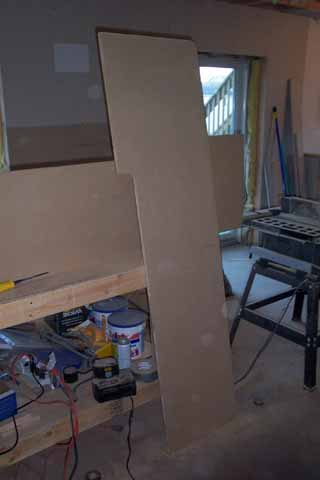
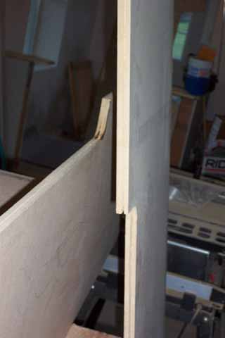

Okay then....
lets begin with materials, just as with the Astrocade kiosk, I used a 4'x8'
3/4" sheet of MDF (Medium Density Fiberboard) for $15 a sheet, picked up
4 can of semi-gloss black spray paint and 2 sheets of 2'x4' 1/2 MDF.
Have Home Depot (or Lowes) cut the 3/4" sheet down to 4'x6' and keep the
2'x4' section off to the side as we will be using that later.
Now have them cut the 4'x6' sheet into 2 20" x 6' lengths.
Take all of the scraps and head home to start with the additional cutting
work....

So, here's what needs to
be done, if you examine the small photo of the game center you will notice
the side pieces are in two parts, one long upright and a smaller upright
which shapes the control panel area. So here's what you'll
do. The monitor depth will be 20" and 22" high, then cut in
3", make a curve and then cut straight down for a 17" depth.
Curve the top rear corner too.

Next, using a dremel tool
with router attachment and 1/8" router "flute" bit, cut a t-molding line
down the front top portion of the monitor section of the kiosk on both
pieces, then underneath the 3" ledge cut-in, around the curve and then
down 16" You don't need to go all the way down or over the
top and black t-molding doesn't appear to be over the over top of the kiosk
from what I could tell from the photo....